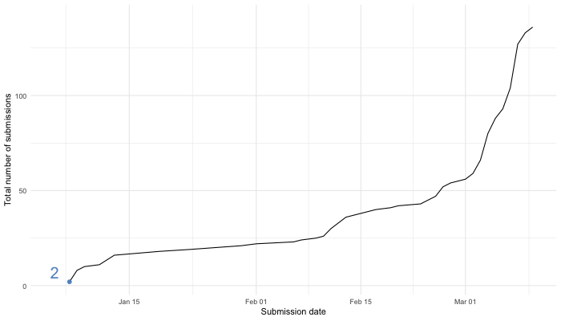
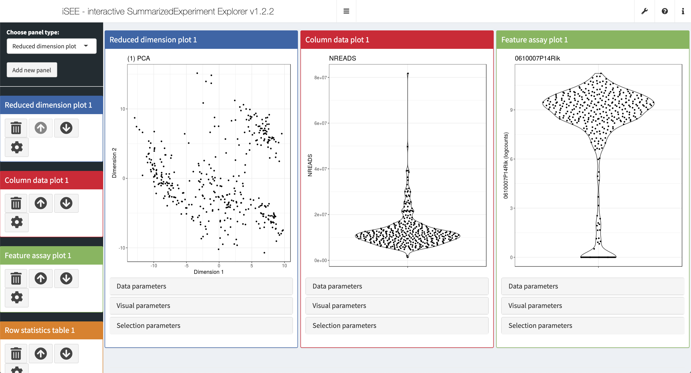
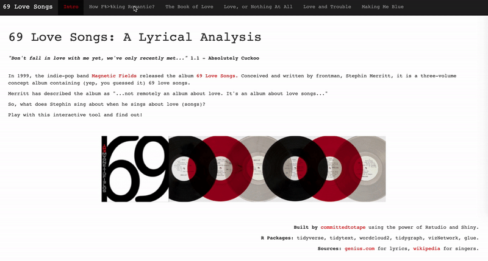
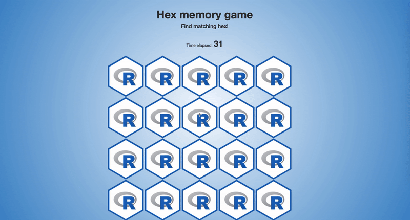
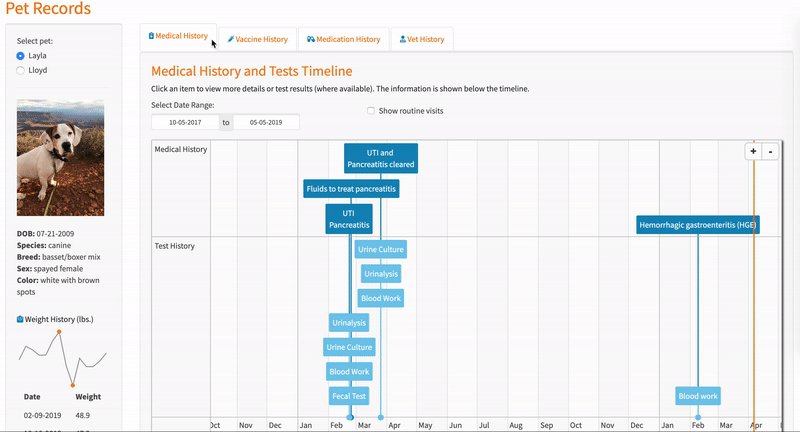
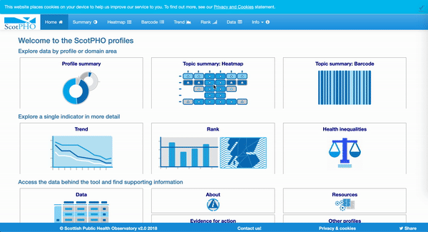
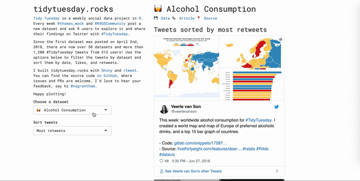
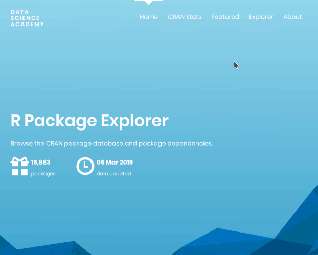
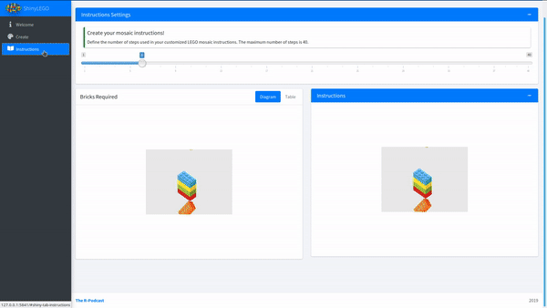
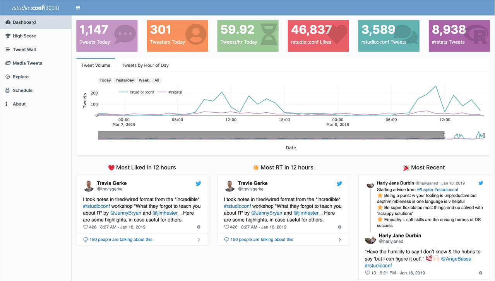

2019-04-05
Back in January we announced the first Shiny contest. The time has come to share the results with you!
First and foremost, we were overwhelmed (in the best way possible!) by the 136 submissions! Reviewing all these submissions was incredibly inspiring and humbling. We really appreciate the time and effort each contestsant put into building these apps, as well as submitting them as a fully reproducible artifacts via RStudio Cloud.
Let’s start with a few stats about the contest submissions:
And here is a look at the growth of submissions over time…

So many of these apps were quite complex, very well-designed, and fun to interact with. Saying that selecting winners was difficult would be the biggest understatement of the year! But we promised to do it, so we did! Below we list the honorable mentions, runners up, and last but not least, the winners of the first Shiny contest.
Before we get to them though, a quick point of claerification: we had promised two winners, one in the novice and one in the open category. However since we didn’t ask developers to self select into these categories it was very difficult to place
apps into these categories post-hoc. So instead we picked four winners in various categories. At the end of the post we also discuss how this experience will help shape the definitions of winning categories in the next Shiny contest.
Over the next week we will be getting in touch with all the winners, runners up, and honorable mentions to arrange delivery of their awards and to highlight their submissions on the Shiny User Showcase.
The four winners, presented here in no particular order, have won the following:
iSEE (interactive SummarizedExperiment Explorer) by Kevin Rue, Charlotte Soneson, Federico Marini, Aaron Lun and is designed for interactive exploration of high-throughput biological data sets. The deeper we dove into this app, the more impressed we were at its feature set. The data-visual-selection controls in each panel were well presented, and the dynamic, directional crosslinking feature is something we haven’t seen before. And it can even generate a reproducible R script!

This app by David Smale is a lyrical analysis of the three-volume concept album by the Magnetic Fields containing (yep, you guessed it) 69 love songs. We fell in love with the look of this app, and really appreciated that the font and colours used in the app have been chosen to match the album artwork. You don’t have to be a fan of the Magnetic Fields to appreciate the care and attention to detail that went into each panel!

A brave handful of people have built small games in Shiny. It’s always impressive to us when people pull that off at all, but we haven’t seen one that works as well as Hex Memory Game created by pvictor. Not only that, but the code is super clean and easy to reason about.

Think you’re a good pet owner? This app by Jenna Allen will make you think again! Jenna, who describes herself as a digital nomad traveling with two dogs, Layla and Lloyd, has built this app for keeping track of her dogs’ medical and vaccine records. The timeline visualizations in the app are extremely effective, and the amount you can drill down – all the way to vaccine certificates and exam notes in PDF format! – is very impressive.

The following six apps are our runners up, and once again presented here in no particular order. Congratulations to the developers who have won the following:
If we were judging solely by ambition of vision, this submission by David Granjon would have to be our winner! The centerpiece of this app is a strikingly detailed visNetwork, but the patient simulator idea is interesting as well.

This app by Jaime Villacampa, Zsanett Bahor, and Vicky Elliott was created to help people living and working in Scotland explore how geographical areas have changed over time or how they compare to other areas, across a range of indicators of health and wider determinants of health. The app is pretty complicated, but no more than it has to be with such a sprawling dataset behind it. Each part of the app has a carefully curated set of options that expose lots of power without being totally overwhelming. The context-sensitive Definition button and pervasive “Download data”/“Save chart” options are nice touches as well.

If you haven’t heard of #TidyTuesday, you’re missing out on one of the most dynamic virtual events in the R community. The tidytuesday.rocks app by Neal Grantham is a tastefully minimalist interface for exploring previous weeks’ datasets and community submissions for visualizations.

There are plenty of Shiny apps for exploring CRAN metadata, but none of them look as striking as this one by nz-stefan! This is a really nice example of HTML Template usage; the separation between the R UI and the raw HTML UI is extremely clean.

This app by Eric Nantz is just fun! Upload any (relatively small) image and within seconds this app will design a LEGO mosaic for you, complete with a list of required bricks and build instructions!

We have fond memories of rstudio::conf 2019, but nostalgia isn’t the only thing going for this dashboard by Garrick Aden-Buie. There are a lot of great tweets we missed the first time around, and we added some new follows. We also loved the “Top Emoji” plot (spoiler: the top emoji was 🤯!).

Remember how we said earlier that there so many gems among the submissions and how it was so difficult to choose between them? Yeah, it was! The following twenty-one apps are the honorable mentions. The developers of these apps will receive one year of shinyapps.io Basic Plan and one RStudio t-shirt.
We have linked to the RStudio Community post for each of the submissions where you can read more about each app, interact with it, and reproduce it in RStudio Cloud.
The first Shiny contest was not only fun to review, but we also learned a lot about how to structure it next time around. (Oh yeah, there will be a next time!) Our plan is to pre-identify clear categories for winners and announce them at the beginning of the contest. We’re pretty sure you will wow us again, and develop apps that are awe-inspiring and don’t fit into any of the categories we outlined, and we’ll want to update things again for the third round of the contest, but c’est la vie! We will also plan better for a high number of submissions so that we can turn around the review quicker (thank you for your patience this time around!).